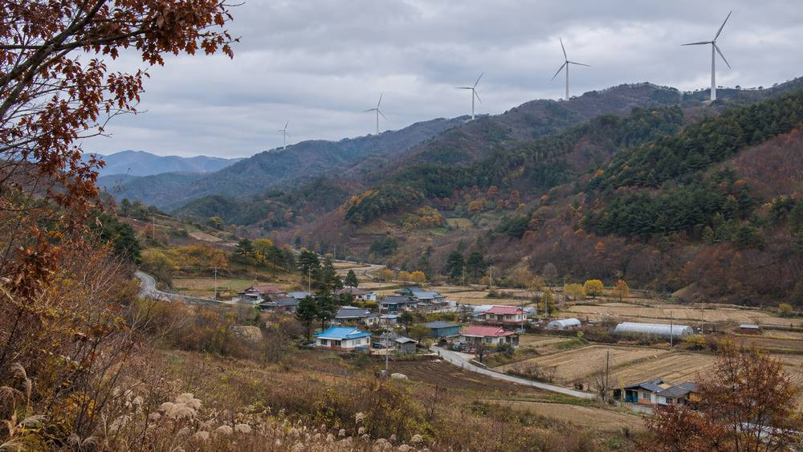

[부산형 햇빛소득②] 기업 PPA로는 수익률 2%대…"부산시가 전기 사서 배출권 비용 아끼자"
부산연구원 "고정가격 상한 150원 아래, 주차장 태양광은 145원에 팔면 원금도 못 건져" / 부산시 배출권 구매비 7억 원대서 20억 원 넘게…시가 PPA 구매자 되면 IRR 5% 넘어 / 전력거래소 "직접 PPA 300kW 이상 고압 요건 완화 검토" / 자유토론서 "협동조합에 맡겨 달라"…선로 1.4km·부서 칸막이 지적


[부산형 햇빛소득①] 공공부지 10MW에 시민 45억…2027년 1월 시범 공모
부산시 17일 옛 시장 관사 도모헌서 에너지신산업 협업네트워크 포럼 / 2030년까지 해마다 2.5MW, 사업비 150억 원 중 시민 30%·PF 70% / 부산테크노파크 "정부 햇빛소득마을 80% 조건부 선정…부지·판로·자금·신뢰 원스톱 지원"

햇빛소득마을 더보기 ›
정치 더보기 ›
산중위 예산안 의결 두 번째 연기…미래대응기금 지방교부세 산정 방식 쟁점으로
국민의힘 중복 편성·기금 소멸 뒤 대책 질의 / 더불어민주당 국가채무비율 들어 반박…법정 시한 12월 2일
정책 더보기 ›
준공 전 산단 지붕·유휴부지 태양광 임대 허용 개정안 발의
산단 태양광 약 2.1GW, 2030년 목표 6GW의 35%…11월 17일 소관 상임위 회부
산업·경제 더보기 ›
[부산형 햇빛소득②] 기업 PPA로는 수익률 2%대…"부산시가 전기 사서 배출권 비용 아끼자"
부산연구원 "고정가격 상한 150원 아래, 주차장 태양광은 145원에 팔면 원금도 못 건져" / 부산시 배출권 구매비 7억 원대서 20억 원 넘게…시가 PPA 구매자 되면 IRR 5% 넘어 / 전력거래소 "직접 PPA 300kW 이상 고압 요건 완화 검토" / 자유토론서 "협동조합에 맡겨 달라"…선로 1.4km·부서 칸막이 지적
금융 더보기 ›
산중위 예산안 의결 두 번째 연기…미래대응기금 지방교부세 산정 방식 쟁점으로
국민의힘 중복 편성·기금 소멸 뒤 대책 질의 / 더불어민주당 국가채무비율 들어 반박…법정 시한 12월 2일
사회 더보기 ›
베란다 태양광 지자체 수요 1만3,629가구, 정부 목표 10만 가구의 13.6%
한국에너지공단 7월 조사에서 56개 지자체 참여 의사, 필요 국비 약 39억 원은 추경 375억 원의 10.4%
지역 더보기 ›
영광 월평마을 등 영농형 태양광 계통 접속 지연, 전남광주시의회 서영광변전소 준공 앞당기라 요구
에너지산업본부는 한전과 준공 시기를 협의하고, 햇빛소득마을에 에너지저장장치와 가상발전소를 잇는 컨설팅을 서두르기로 했다
오피니언 더보기 ›
"싸고 빠른 발전소는 수요 속에 있다"…전력수요 100GW 시대, 저녁엔 줄이고 낮엔 늘리는 '부하이전' 키우자
우종률 고려대 에너지환경대학원 교수 기고…12차 전기본 수요관리 목표 20.8GW를 실제 자원으로 만들 세 가지 조건
시민에너지 더보기 ›
[부산형 햇빛소득②] 기업 PPA로는 수익률 2%대…"부산시가 전기 사서 배출권 비용 아끼자"
부산연구원 "고정가격 상한 150원 아래, 주차장 태양광은 145원에 팔면 원금도 못 건져" / 부산시 배출권 구매비 7억 원대서 20억 원 넘게…시가 PPA 구매자 되면 IRR 5% 넘어 / 전력거래소 "직접 PPA 300kW 이상 고압 요건 완화 검토" / 자유토론서 "협동조합에 맡겨 달라"…선로 1.4km·부서 칸막이 지적
【釜山型太陽光所得②】企業PPAでは収益率2%台…「釜山市が電気を買い、排出権費用を節約」
釜山研究院「固定価格の上限150ウォン未満、駐車場の太陽光は145ウォンで売れば元本も回収できない」 / 釜山市の排出権購入費は7億ウォン台から20億ウォン超に…市がPPA購入者になれば内部収益率5%超 / 電力取引所「直接PPAの300kW以上高圧要件の緩和を検討」 / 自由討論で「協同組合に任せて」…送電線1.4km・部署の縦割りを指摘



【釜山型太陽光所得①】公共用地10MWに市民45億ウォン…2027年1月に試験公募
釜山市が17日、旧市長公館トモホン（道母軒）でエネルギー新産業協業ネットワークフォーラム / 2030年まで毎年2.5MW、事業費150億ウォンのうち市民30%・PF 70% / 釜山テクノパーク「政府の太陽光所得村は80%が条件付き選定…用地・販路・資金・信頼をワンストップで支援」

霊光・月坪村など営農型太陽光の系統接続が遅れ、全南光州市議会が西霊光変電所の完成前倒しを要求
エネルギー産業本部は韓電と完成時期を協議し、陽光所得村にエネルギー貯蔵装置と仮想発電所をつなぐコンサルティングを急ぐ
太陽光所得村 もっと見る ›
政治 もっと見る ›
ベランダ太陽光の自治体需要1万3,629世帯、政府目標10万世帯の13.6%
韓国エネルギー公団の7月調査で56自治体が参加意向、必要な国費約39億ウォンは補正予算375億ウォンの10.4%
政策 もっと見る ›
完成前の産業団地でも屋根・遊休地の太陽光賃貸を認める改正案を発議
産業団地の太陽光は約2.1GW、2030年目標6GWの35%…11月17日に所管の常任委員会へ付託
産業・経済 もっと見る ›
【釜山型太陽光所得②】企業PPAでは収益率2%台…「釜山市が電気を買い、排出権費用を節約」
釜山研究院「固定価格の上限150ウォン未満、駐車場の太陽光は145ウォンで売れば元本も回収できない」 / 釜山市の排出権購入費は7億ウォン台から20億ウォン超に…市がPPA購入者になれば内部収益率5%超 / 電力取引所「直接PPAの300kW以上高圧要件の緩和を検討」 / 自由討論で「協同組合に任せて」…送電線1.4km・部署の縦割りを指摘
金融 もっと見る ›
江原道の鉄原・華川の郡議員、接境地域政策フォーラムで営農型太陽光の郡民ファンドを提案
鉄原の農地の約60%が外部所有との懸念…華川は軍の遊休推定地約1,087万㎡の活用特例拡大を提案
社会 もっと見る ›
ベランダ太陽光の自治体需要1万3,629世帯、政府目標10万世帯の13.6%
韓国エネルギー公団の7月調査で56自治体が参加意向、必要な国費約39億ウォンは補正予算375億ウォンの10.4%
地域 もっと見る ›
霊光・月坪村など営農型太陽光の系統接続が遅れ、全南光州市議会が西霊光変電所の完成前倒しを要求
エネルギー産業本部は韓電と完成時期を協議し、陽光所得村にエネルギー貯蔵装置と仮想発電所をつなぐコンサルティングを急ぐ
オピニオン もっと見る ›
「安くて速い発電所は需要の中にある」…電力需要100GW時代、夕方は減らし昼は増やす「負荷移動」を育てよう
ウ・ジョンリュル高麗大学エネルギー環境大学院教授が寄稿…第12次電力需給基本計画の需要管理目標20.8GWを実際の資源にする3つの条件
市民エネルギー もっと見る ›
【釜山型太陽光所得②】企業PPAでは収益率2%台…「釜山市が電気を買い、排出権費用を節約」
釜山研究院「固定価格の上限150ウォン未満、駐車場の太陽光は145ウォンで売れば元本も回収できない」 / 釜山市の排出権購入費は7億ウォン台から20億ウォン超に…市がPPA購入者になれば内部収益率5%超 / 電力取引所「直接PPAの300kW以上高圧要件の緩和を検討」 / 自由討論で「協同組合に任せて」…送電線1.4km・部署の縦割りを指摘
【釜山型阳光收入②】仅靠企业PPA收益率2%左右…"由釜山市购电，节省排放权费用"
釜山研究院："固定价格上限低于150韩元，停车场光伏以145韩元出售连本金都收不回" / 釜山市排放权购买费从7亿增至20亿韩元以上…市政府成为PPA买方则内部收益率超过5% / 电力交易所："研究放宽直接PPA的300kW以上高压条件" / 自由讨论："交给合作社吧"…指出1.4公里线路缺口与部门壁垒
【釜山型阳光收入①】公共用地10MW，市民出资45亿韩元…2027年1月启动试点招募
釜山市17日在原市长官邸道母轩举办能源新产业协作网络论坛 / 2030年前每年2.5MW，150亿韩元项目费中市民30%、项目融资70% / 釜山科技园："政府阳光收入村80%为有条件入选…将一站式支持场地、销路、资金和信任"
阳光收入村 更多 ›
政治 更多 ›
阳台光伏地方政府需求1.3629万户，仅为政府目标10万户的13.6%
韩国能源公团7月调查显示56个地方政府有意参与，所需国费约39亿韩元，占追加预算375亿韩元的10.4%
政策 更多 ›
产业园区工厂竣工前即可出租屋顶和闲置用地发展太阳能，修正案提出
园区太阳能约2.1GW，为2030年目标6GW的35%…11月17日已交付主管常任委员会
产业·经济 更多 ›
【釜山型阳光收入②】仅靠企业PPA收益率2%左右…"由釜山市购电，节省排放权费用"
釜山研究院："固定价格上限低于150韩元，停车场光伏以145韩元出售连本金都收不回" / 釜山市排放权购买费从7亿增至20亿韩元以上…市政府成为PPA买方则内部收益率超过5% / 电力交易所："研究放宽直接PPA的300kW以上高压条件" / 自由讨论："交给合作社吧"…指出1.4公里线路缺口与部门壁垒
金融 更多 ›
江原道铁原、华川郡议员在边境地区政策论坛提议设立农光互补郡民基金
担忧铁原约60%农地归外地人所有…华川提议扩大军队闲置推定用地约1,087万㎡的利用特例
社会 更多 ›
阳台光伏地方政府需求1.3629万户，仅为政府目标10万户的13.6%
韩国能源公团7月调查显示56个地方政府有意参与，所需国费约39亿韩元，占追加预算375亿韩元的10.4%
地方 更多 ›
灵光月坪村等农光互补并网延迟，全南光州市议会要求提前建成西灵光变电站
能源产业本部正与韩电协商完工时间，并将尽快推进为阳光收入村衔接储能装置和虚拟电厂的咨询
评论 更多 ›
“便宜又快的电厂就在需求之中”…电力需求100GW时代，应发展晚间少用、白天多用的“负荷转移”
高丽大学能源环境研究生院教授禹钟律撰文：让第12次电力供需基本计划需求管理目标20.8GW成为真正资源的三个条件
市民能源 更多 ›
【釜山型阳光收入②】仅靠企业PPA收益率2%左右…"由釜山市购电，节省排放权费用"
釜山研究院："固定价格上限低于150韩元，停车场光伏以145韩元出售连本金都收不回" / 釜山市排放权购买费从7亿增至20亿韩元以上…市政府成为PPA买方则内部收益率超过5% / 电力交易所："研究放宽直接PPA的300kW以上高压条件" / 自由讨论："交给合作社吧"…指出1.4公里线路缺口与部门壁垒
[Busan Sunlight Income ②] Corporate PPAs yield about 2%; researchers propose the city buy the power and save on emission allowances
Busan Development Institute: fixed-price cap below 150 won, parking-lot solar sold at 145 won cannot recover its principal / Busan City's allowance purchases rise from 700 million won to over 2 billion won; with the city as PPA buyer, IRR tops 5% / KPX: easing the 300kW high-voltage requirement for direct PPAs is under review / Open discussion: "Leave it to cooperatives"; 1.4km grid gap and departmental silos raised
[Busan Sunlight Income ①] 10MW on public land with 4.5 billion won from citizens; pilot call opens January 2027
Busan City holds Energy New Industry Collaboration Network Forum at Domoheon, the former mayor's residence, on Nov. 17 / 2.5MW a year through 2030, 30% of the 15 billion won from citizens and 70% project finance / Busan Techno Park: "80% of government Sunlight Income Villages were selected only conditionally; one-stop support for sites, buyers, financing and trust"
Grid Connection Delays Hit Agrivoltaics at Yeonggwang's Wolpyeong Village; Jeonnam-Gwangju Council Asks for Earlier West Yeonggwang Substation
The energy industry headquarters is negotiating the completion date with KEPCO and will speed up consulting that links sunlight income villages to energy storage and a virtual power plant
Today's highlights
- Goheung County Opens Booth at World Solar Conference and Presents 10 GW Renewable Energy Plan
- Daejeon Hanbat Stadium Car-Park Solar: Cost and Capacity Differ Across Documents, City Council Audit Finds
- Ulju County Plans Nov. 17 Start for Guyeong Park Car-Park Solar as Residents 20 m Away Demand Withdrawal
- Yeosu Committee Passes Ordinance Cutting Solar Setback From Homes From 300 to 200 Meters
- Gimhae council solar forum proposes surveying sites at public car parks, schools and industrial parks
- Jeonbuk province issues 12 actions in agricultural institute audit…agrivoltaic array lacked temporary farmland-use consultation
Sunlight Income Village More ›
- Goseong's Jangsin 1-ri sunlight income village to finish in December, with expected income of 81.29 million won a year
- Ongjin County head says grid connection is the biggest hurdle for island renewables; Sunlight Income Village push at Nae 7-ri resumes
- 17 Cheongju villages apply in third round of 'Sunlight Income Village' program: 16,082kW of solar, 23.6 billion won
Politics More ›
Balcony solar demand from local governments reaches 13,629 homes, 13.6% of the 100,000-home target
Korea Energy Agency July survey: 56 local governments interested; required national funding of about 3.9 billion won is 10.4% of the 37.5 billion won supplementary budget
- Bill would allow solar leases on industrial-park roofs and idle land before completion
- Cheorwon and Hwacheon county councillors propose an agrivoltaic residents' fund at border-region policy forum
- Defense ministry drafts its first military energy transition plan, aimed at keeping power on during blackouts
- Three special bills to merge five power generators filed, with Ulsan and Busan head-office options side by side
Policy More ›
Bill would allow solar leases on industrial-park roofs and idle land before completion
Park solar stands at about 2.1GW, 35% of the 2030 goal of 6GW; referred to the standing committee on Nov. 17
- Defense ministry drafts its first military energy transition plan, aimed at keeping power on during blackouts
- Climate ministry raises Seoul-area data center grid impact pass mark to 75 points, effective Nov. 16
- Gyeonggi's 'RE101' public-sector claim rests on capacity; actual renewable output covers about 14% of use
- PM Han: good local policies should go nationwide — cites Sinan's profit-sharing and Yeonggwang's solar-wind basic income
Industry & Economy More ›
[Busan Sunlight Income ②] Corporate PPAs yield about 2%; researchers propose the city buy the power and save on emission allowances
Busan Development Institute: fixed-price cap below 150 won, parking-lot solar sold at 145 won cannot recover its principal / Busan City's allowance purchases rise from 700 million won to over 2 billion won; with the city as PPA buyer, IRR tops 5% / KPX: easing the 300kW high-voltage requirement for direct PPAs is under review / Open discussion: "Leave it to cooperatives"; 1.4km grid gap and departmental silos raised
- Cheorwon and Hwacheon county councillors propose an agrivoltaic residents' fund at border-region policy forum
- Korea's public finance put $27.7 billion into overseas fossil fuels, 4.8 times its climate finance
- Jeju's first climate-economy vice governor: 'Turn wind and sun into residents' income' with a province-wide citizens' fund
- Jeju Energy Corporation starts pilot turning surplus wind power into hydrogen with ALK and PEM electrolysers plus storage
Finance More ›
Cheorwon and Hwacheon county councillors propose an agrivoltaic residents' fund at border-region policy forum
Concern that about 60% of Cheorwon farmland is owned by outsiders; Hwacheon councillor proposes wider use of about 10.87 million sq. m of presumed idle military land
- Shared solar and batteries reach South Australian apartments, with half the cost in grants and the rest in zero-interest loans
- Korea's public finance put $27.7 billion into overseas fossil fuels, 4.8 times its climate finance
- Jeju's first climate-economy vice governor: 'Turn wind and sun into residents' income' with a province-wide citizens' fund
- Parent of Ulsan's 750 MW floating offshore wind project Munmu Baram to vote on liquidation on the 25th; funding is key
Society More ›
Balcony solar demand from local governments reaches 13,629 homes, 13.6% of the 100,000-home target
Korea Energy Agency July survey: 56 local governments interested; required national funding of about 3.9 billion won is 10.4% of the 37.5 billion won supplementary budget
- 1,500 Daejeon residents join 'energy walk' ahead of World Conference on Photovoltaic Energy Conversion, running to Nov. 20
- Geochang finally removed from candidate corridor for Sinjangsu–Muju Yeongdong power line; residents' opposition committee to disband on 25th
- Residents under the water and power lines for Korea's chip cluster ask for a livelihood first — solar income, not pensions, offered in Hwasun
- South Chungcheong school solar output records found erratic — eight months exceeding a full year by 36%, or reported as zero
Regions More ›
Grid Connection Delays Hit Agrivoltaics at Yeonggwang's Wolpyeong Village; Jeonnam-Gwangju Council Asks for Earlier West Yeonggwang Substation
The energy industry headquarters is negotiating the completion date with KEPCO and will speed up consulting that links sunlight income villages to energy storage and a virtual power plant
- Daejeon Hanbat Stadium Car-Park Solar: Cost and Capacity Differ Across Documents, City Council Audit Finds
- Ulju County Plans Nov. 17 Start for Guyeong Park Car-Park Solar as Residents 20 m Away Demand Withdrawal
- Yeosu Committee Passes Ordinance Cutting Solar Setback From Homes From 300 to 200 Meters
- Gimhae council solar forum proposes surveying sites at public car parks, schools and industrial parks
Opinion More ›
'The cheapest, fastest power plant lies in demand': expert urges load shifting for Korea's 100 GW era
Column by Korea University professor Woo Jong-ryul on three conditions for turning the 12th Basic Plan's 20.8 GW demand-management target into a real resource
- "Open Hampyeong's next century with an 8 GW renewable hub": civic leader proposes sunlight pension and 345 kV substation
- "Use renewable work to keep local firms alive while waiting for chip fabs": call to fast-track a Jeonnam-Gwangju energy corporation
- "Residents under transmission towers must count too": Seocheon and Boryeong brace for Saemangeum–Sinseosan 345 kV line
- "Public car-park solar should be owned and run by citizens": Incheon environmental group urges citizen-equity criteria in tenders
Citizen Energy More ›
[Busan Sunlight Income ②] Corporate PPAs yield about 2%; researchers propose the city buy the power and save on emission allowances
Busan Development Institute: fixed-price cap below 150 won, parking-lot solar sold at 145 won cannot recover its principal / Busan City's allowance purchases rise from 700 million won to over 2 billion won; with the city as PPA buyer, IRR tops 5% / KPX: easing the 300kW high-voltage requirement for direct PPAs is under review / Open discussion: "Leave it to cooperatives"; 1.4km grid gap and departmental silos raised
- [Busan Sunlight Income ①] 10MW on public land with 4.5 billion won from citizens; pilot call opens January 2027
- Goheung County Opens Booth at World Solar Conference and Presents 10 GW Renewable Energy Plan
- Goseong's Jangsin 1-ri sunlight income village to finish in December, with expected income of 81.29 million won a year
- Pyeongchang to sign deal on 200MW of publicly led wind at Bangnim, Dosa-ri and Heungjeong on Nov. 18